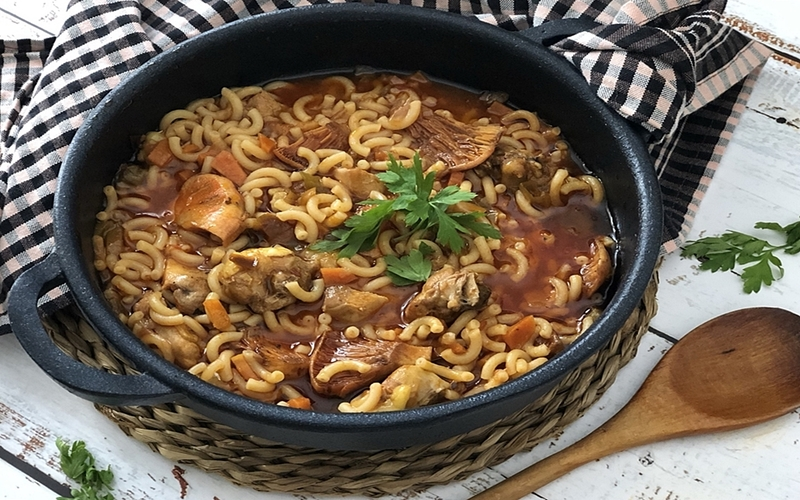

Ingredients
- 400 g thick noodles (no. 4 or similar)
- 400 g pork ribs, chopped into small pieces
- 5 ripe tomatoes or 5 tablespoons natural crushed tomato
- 1 large onion, finely chopped
- 1 garlic clove (plus 2 more for the picada)
- 100 g shelled peas (fresh or frozen)
- 900 ml meat broth (or 750 ml if using the simpler version)
- 100 ml olive oil
- Salt to taste
- Chopped parsley for garnish (optional)
For the picada
- A few saffron threads
- 2 garlic cloves
- 20 g almonds
Instructions
- Brown the Pork Ribs: Heat olive oil in a casserole. Brown the pork ribs over medium heat. Once golden, set them aside.
- Make the Sofregit: In the same oil, sauté the chopped onion until soft. Add the crushed tomatoes or grated fresh tomatoes and cook for a few minutes until the mixture is reduced and thick.
- Combine: Add the pork ribs back to the pan along with the noodles. Stir everything together to coat well in the sofregit.
- Add Broth and Peas: Pour in the hot meat broth and add the peas. Stir gently and bring to a boil.
- Prepare the Picada: In a mortar, crush the saffron, garlic, and almonds into a paste. Mix with a little hot broth from the pot to loosen it. Add this mixture to the casserole about halfway through the noodle cooking process (after ~7 minutes).
- Simmer: Season with salt to taste. Reduce heat and simmer uncovered for about 15 minutes total, or until the noodles are cooked and the broth has reduced.
- Rest and Serve: Turn off the heat and let the dish rest covered for 5–8 minutes. Serve hot, garnished with chopped parsley if desired.